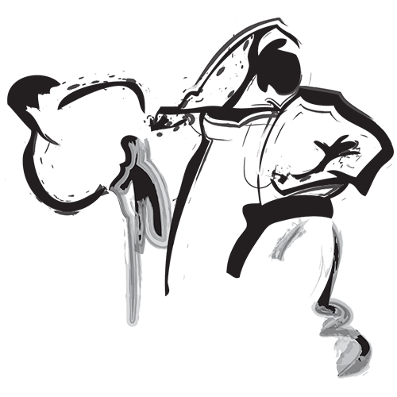

Hamid Chalah
Hamid Chalah est notre chef de dojo. C'est un yodan, ceinture noire du quatrième niveau (sur cinq) dans le karaté shotokan traditionnel. Hamid enseigne le karaté à Montréal depuis les années 1990.

Le karaté Shotokan est un art martial traditionnel japonais d'autodéfense.
Dans nos vies de tous les jours, nous oublions souvent la valeur de l'exercice pour notre santé physique et mentale. La pratique du karaté tonifie le corps, développe la coordination, accélère les réflexes et renforce l'endurance.
La pratique sérieuse du karaté développe le calme, un processus de pensée clair, une compréhension plus profonde de ses capacités mentales et renforce la confiance en soi. Le karaté n'est pas la fin, mais un moyen d'atteindre une fin. Le karaté encourage la maîtrise et la coordination de l'esprit et du corps. Faire progresser l'âge n'est pas un obstacle à la pratique du karaté.
Venez essayer le karaté - les deux premiers mois sont gratuits!
Hamid Chalah est notre chef de dojo. C'est un yodan, ceinture noire du quatrième niveau (sur cinq) dans le karaté shotokan traditionnel. Hamid enseigne le karaté à Montréal depuis les années 1990.
Paul Gomme (3ème), Xintong Han (4ème), Peter Helfer (1er) et Hamid Chalah (Yodan).
Le dojo karaté Shotokan de Westmount est un fier membre du Shotokan Karate of America, fondé en 1959 par Sensei Tsutomu Ohshima.
Bien que les origines anciennes du karaté soient extrêmement vagues, nous savons qu’il ya environ 1400 ans, alors qu’il enseignait dans le temple de Shaolin en Chine, Daruma Daishi utilisait des techniques de base du karaté. Ces techniques se sont développées dans la boxe de Shaolin. Au 16ème siècle, la boxe Shaolin trouve son chemin à Okinawa depuis la Chine. Elle s’associe aux techniques natives d’Okinawa pour se développer en plusieurs styles d’Okinawa.
En 1922, après avoir maîtrisé deux styles majeurs à Okinawa, Maître Gichin Funakoshi a été invité à faire une démonstration de karaté à la 1ère exposition d'athlétisme nationale à Tokyo. Cela a conduit à l'introduction de l'ancien art martial dans le reste du Japon. Sous l'impulsion d'amis et de responsables, il est resté à Tokyo pour enseigner.
En 1955, Tsutomu Ohshima, l’un des derniers soldats du maître Funakoshi diriger les élèves. (Université Waseda, 1948-1953) est venu à la États-Unis et a été l’une des premières personnes à enseigner le karaté dans ce pays. La même année, il organisa la Southern Association de Karaté Calfornia. qui a grandi au fil des ans pour Devenir une organisation nationale à but non lucratif, Shotokan Karaté d'Amérique.
Le karaté vient du mot japonais “Kara” (vide) et “te” (mains) qui signifie l'art des mains vides. Il implique une variété de techniques qui utilisent une utilisation ingénieuse du corps.
En SKA, votre rang indique votre niveau en 14 étapes. système. Le système de classement original de Maître Funakoshi est encore utilisé qui consiste en: ceinture blanche - 5 kyus, ceinture brune - 3 kyus et ceinture noire - 5 dans. Grades à déterminer rang se tiennent en novembre et avril (les mois de La naissance et la mort de Maître Funakoshi). Au classement, un Un panel de ceintures noires seniors évalue votre niveau en fonction votre capacité technique, votre âge, votre durée de pratique, circonstances spéciales, le nombre de formations spéciales que vous ont assisté, et votre mentalité de formation. Si et à quel point votre rang augmente à un classement n'est pas aussi Il est important d’utiliser les commentaires du Black Belt Council pour améliorer votre niveau à l’avenir.
La seule exigence pour la pratique du karaté est des vêtements amples. Une fois engagé dans la pratique du karaté, on devrait acheter un gi (uniforme). Le gi doit être blanc, sans aucune marque. Des coussinets à mains et un protège-dents sont recommandés pour les combats avancés.
| Quand: | Les samedis 13h00-14h30 Les mardis: 19h00-20h30pm |
|---|---|
| Où: | Salle d'arts martiaux (sous-sol) Centre Greene 1090 Av. Greene Westmount, QC, Canada |
| 2019 | Juniors | Anciens |
|---|---|---|
| Septembre | Heian Shodan | Tekki Shodan |
| Octobre | Heian Nidan | Empi |
| Novembre | Heian Sandan | Gankaku |
| Decembre | Heian Yodan | Tekki Nidan |
| 2020 | ||
| Janvier | Heian Godan | Bassai |
| Fevrier | Heian Shodan | Kanku |
| Mars | Heian Nidan | Jion |
| Avril | Heian Sandan | Jutte |
| Mai | Heian Yodan/Godan | Hangetsu |
| Juin | Tekki Shodan | Tekki Sandan |